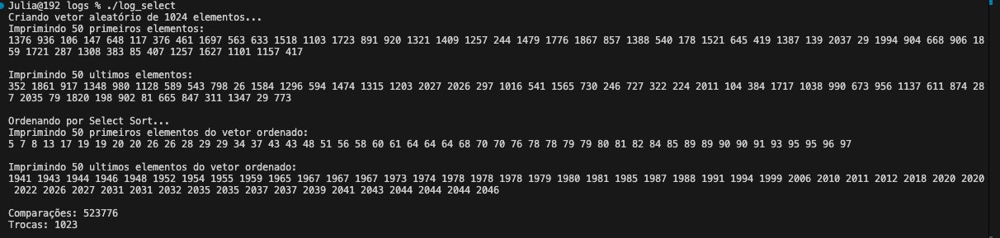
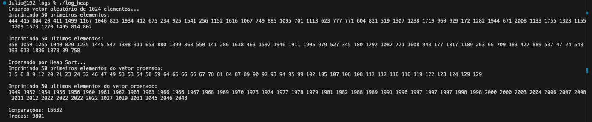
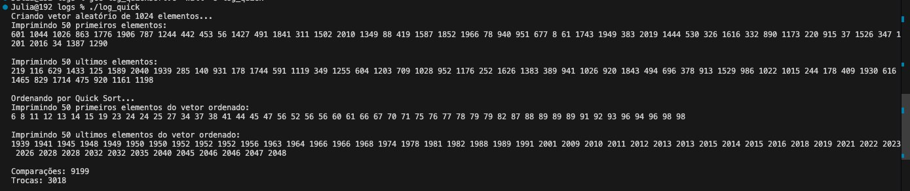
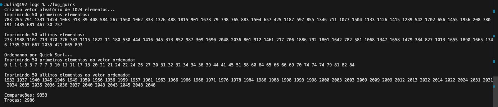

Os arquivos abaixo mostram o conteúdo final das implementações em C utilizadas nos testes.
As imagens abaixo mostram os resultados obtidos durante os testes.
Testes com SelectionSort

Testes com HeapSort

Testes com QuickSort
 Testes com a fila